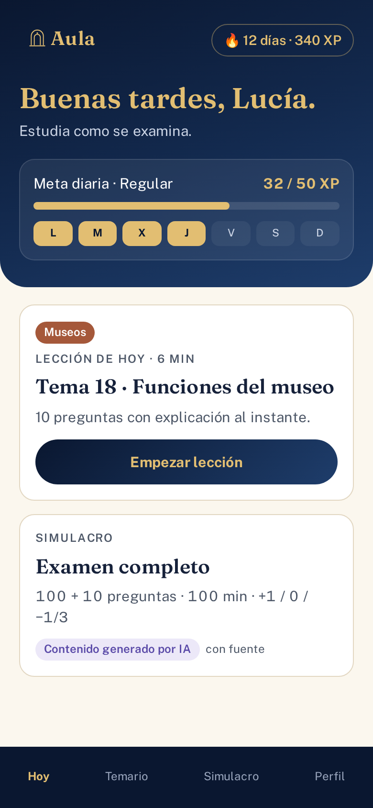
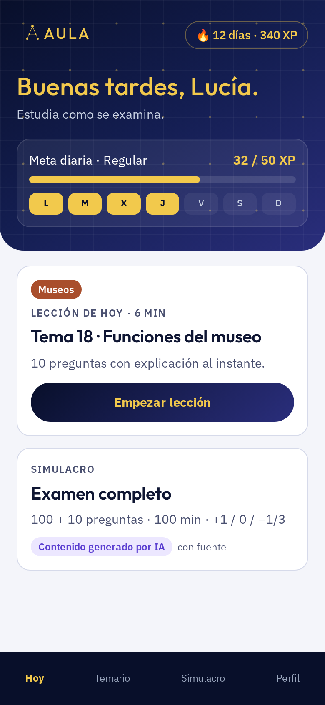

Aula — 6 направлений бренда
A–D — мои варианты, E–F — варианты дизайнера. Общая рекомендация — внизу.
A · Claustro — академический престиж
Тёмно-синий градиент + золото, классическая антиква. Как Гарвард/Оксфорд, но в приложении: строгость и доверие.


Палитра: #0B1A33 → #1E3A6E, золото #C9A44C / #E6CF8B
Шрифты: Cormorant Garamond (заголовки) + Inter (текст)
Логотип и вертикали: AULA разрядкой + золотая звезда-«печать». Вертикали — тонкий чип: Museos #B5653A, Justicia #8E2C3A, Policía #4A6A8A, Educación #2F7D5B.
Голос:
- «Tu plaza se prepara cada día.»
- «Domina el temario, tema a tema.»
- «Has respondido como en el examen real.»
B · Aurora — современное премиум-приложение
Глубокий синий с «сиянием» и тёплым золотом, округлый гротеск. Премиально, но живо.


Палитра: #070B1F → #101A44 → #2B3F8F, золото #F2C14E → #FFE29A
Шрифты: Plus Jakarta Sans — внимание: тот же шрифт у Khan Academy, для своего лица лучше заменить (например, на Outfit)
Логотип и вертикали: Строчное «aula» золотом. Вертикали — цвет свечения фона: Museos #FF8A5B, Justicia #9B8CFF, Policía #4FC3F7, Educación #5DD39E.
Голос:
- «Hoy toca: 40 preguntas y un café.»
- «Vas por buen camino. 12 días seguidos.»
- «Tu esfuerzo cuenta. Tu código postal, no.»
C · Impulso — игровой, но взрослый
Контраст: светлый и тёплый, как Duolingo без детскости. Серии, яркие кнопки.


Палитра: фон #FFF8EC, коралл #FF6B3D, синий #2E5BFF — но оранжевый уже у OpositaTest
Шрифты: Nunito
Логотип и вертикали: «aula!» — восклицательный знак как «aprobado». Каждая вертикаль — свой цвет кнопок.
Голос:
- «¡Otra más y cierras el tema!»
- «Fallar aquí es gratis. En el examen, no.»
- «¡Racha de 12 días! Sigue así.»
D · Editorial — спокойный и умный
Бумажный фон, тёмно-синий текст, золото только акцентом. Ясность и экспертиза.


Палитра: фон #F4F1EA, navy #14213D, золото #D9A21B
Шрифты: Fraunces + IBM Plex Sans
Логотип и вертикали: «Aula.» с точкой — «решено». Вертикали — маленький цветной маркер.
Голос:
- «Menos ruido. Más temario.»
- «Cada respuesta, explicada con la norma.»
- «Estudia con método, no con suerte.»
E · Noche de estudio — от дизайнера
Редакционный стиль, «библиотека под лампой»: ночной синий, тёплое золото, спокойный взрослый тон.

Палитра: #0A1730 → #132A4F → #1E3D6B, золото #E2BE72
Шрифты: Fraunces (заголовки) + Public Sans (интерфейс)
Логотип и вертикали: Арка (аула, портал) с точкой-лампой + золотое «Aula». Вертикали — бейдж и тонкая линия: Museos #E0906A, Justicia #D98A97.
F · Constelación — от дизайнера
Темы — звёзды на карте неба: выученное «зажигается», путь к экзамену — созвездие.

Палитра: #080F2A → #141E52 → #2A2E7C, золото #F2C94C
Шрифты: Outfit (заголовки) + IBM Plex Sans (текст)
Логотип и вертикали: Буква «A» из трёх звёзд. Вертикали — свой цвет созвездия.
Исследование
По официальным гайдам и коду сайтов, 31.10.2026.
Малиновый #A51C30 (не для текста), антиква Anziano только для заголовков, текст — гротеск.
источник
Тёмно-синий #253B80 + оранжевый #EF7746; «¡Más cerca de tu plaza con OpositaTest!» — бодро, на «ты».
источник
Чёрно-белый + красный #EC4249, navy #11184A, Montserrat/Poppins; «La forma inteligente de opositar».
источник
Выводы:
- Престиж = один глубокий цвет + антиква; у Оксфорда и Йеля это именно тёмно-синий.
- Антиква — только для заголовков, интерфейс — гротеск (Гарвард, Оксфорд).
- Тёмная тема читается как «премиум» (MasterClass, Babbel).
- Мотивация (Duolingo, Brilliant) держится на сериях и празднике маленьких побед, а не на цвете.
- У испанских конкурентов синий есть (OpositaTest, MAD), оранжевый и красный заняты, но золота и ночного градиента нет ни у кого — это наше отличие.
Общая рекомендация: E · Noche de estudio
Её рекомендует дизайнер, и исследование это подтверждает: ночной синий, как у Оксфорда и Йеля; золото, которого нет у конкурентов; антиква только в заголовках, а интерфейс на удобном гротеске. Из B стоит взять живые карточки прогресса и серии дней, из C — тёплый мотивирующий голос.